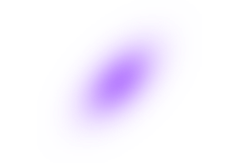
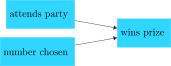
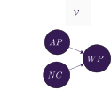
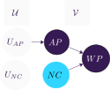

![]()

A distributional perspective on counterfactual and causal sensitivity
When an effect depends counterfactually on a cause, in general it will depend on much else as well. If the cause had occurred but other circumstances had been different, the effect would not have occurred. To the extent this is so, the dependence is sensitive.
Lewis (1986)

A causal claim is insensitive to the extent to which it would continue to hold under various sorts of changes in the actual circumstances. The sensitivity of counterfactuals is understood similarly.
Woodward (2006)

Sensitivity and causal judgment


You won the prize because your number was chosen.
But why?
O(AP) \rightarrow O(WP)
O(\neg AP) \rightarrow O(\neg WP)
O(NC) \rightarrow O(WP)
O(\neg NC) \rightarrow O(\neg WP)
Actual world
Typical world
Causal graphs
\mathcal{G} = \{ \mathcal{V}, \mathcal{U}, \mathcal{F}, P(\mathcal{U}) \}
\mathcal{F} \begin{align*} AP &:= U_{AP} \\ NC &:= U_{NC} \\ WP &:= AP \wedge NC \end{align*}
P(\mathcal{U}) \begin{align*} P(U_{AP}) &= .90 \\ P(U_{NC}) &= .01 \end{align*}


Interventions
P(WP \;\vert\; do(NC=1)) = \; ? \;\;\;
P(WP \;\vert\; do(NC=1)) = .90
\mathcal{F} \begin{align*} AP &:= U_{AP} \\ NC &:= U_{NC} \\ WP &:= AP \wedge NC \end{align*}
\mathcal{F} \begin{align*} AP &:= U_{AP} \\ NC &:= 1 \\ WP &:= AP \wedge NC \end{align*}
P(\mathcal{U}) \begin{align*} P(U_{AP}) &= .90 \\ P(U_{NC}) &= .01 \end{align*}


Example: robust sufficiency
\textrm{Sensitivity}_{\mathfrak{N}}(WP_{AP=1}(u)=1)
\quad= \sqrt{\mathfrak{N}(WP = 0 \;\vert\; do(AP=1))}
\quad= \sqrt{\mathfrak{N}(WP = 0 \;\vert\; AP=1)}
\quad= \sqrt{\mathfrak{N}(NC = 0)}
\quad\approx 0.99
\textrm{Sensitivity}_{\mathfrak{N}}(WP_{NC=1}(u)=1)
\quad= \sqrt{\mathfrak{N}(AP = 0)}
\quad\approx 0.32